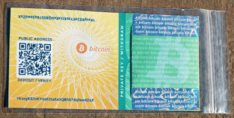
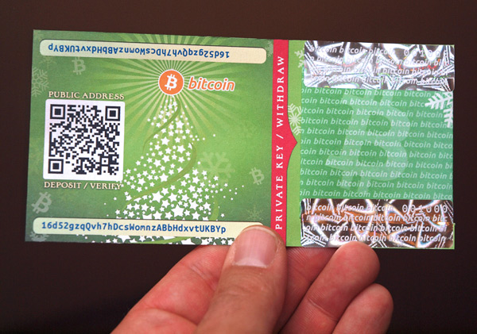

BitcoinPaperWallet.com is an open-source paper wallet generator based on the ?BitAddress generator. It runs on any modern web browser and relies on JavaScript for all cryptographic functionality.
Secure usage
- The easiest way to use this generator is directly from the website -- however this is also the least secure method.
- A more secure process is to download the generator from GitHub so that it can be run as a "local" webpage using a secure offline computer. No Internet connection is required to generate new paper wallets and Bitcoin addresses.
- For the highest level of security, install the BitcoinPaperWallet generator onto an absolutely clean (virus-free, no unnecessary applications installed) "Live CD" or bootable USB thumbdrive. Ubuntu LiveCDs with the BitcoinPaperWallet generator pre-installed are available from https://bitcoinpaperwallet.com.
Differences from BitAddress
While BitAddress is capable of generating "brain wallets", pool-generated vanity wallets, and bulk wallets, BitcoinPaperWallet has been simplified such that its only function is to produce paper wallets. Additionally:
- Paper wallets printed using BitcoinPaperWallet feature a tri-fold design that is sealed shut so as to hide the wallet's private key and QR code from view.
- The reverse side of the design includes instructions for general use as well as a ledger for writing down deposits or other notes.
- The overall design includes a number of features to discourage casual tampering efforts that might otherwise reveal the private key without notice.
- The generator includes an option for printing a paper wallet by pasting in a self-generated private key or vanity address, bypassing the random address generator altogether.

Similarities to BitAddress
BitcoinPaperWallet is a GitHub "fork" of BitAddress and uses verifiably identical cryptographic functions and methods. Similarly:
- The generator works entirely from within a web browser.
- Addresses are never transmitted over the Internet, and no Internet connection is required for the generator to work.
- The full source code can be examined via "view source" in web browser.
- Cryptographic work, random number generation, and random data seeding ("gathering entropy") is accomplished using JavaScript.
- The generator can be run offline by downloading a ZIP archive of the HTML from GitHub.
Designs
The BitcoinPaperWallet design is available in 12 different languages. Designs for special occasions are also available, for example these designs for the Christmas holiday or for giving money in red envelopes (e.g. for Chinese New Year.)

?Bitcoinpaperwallet-chinese-new-year.jpeg